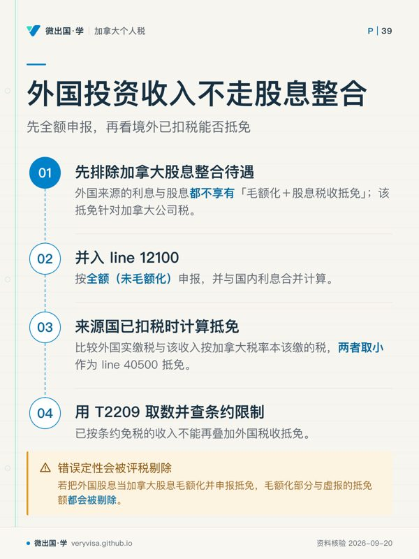
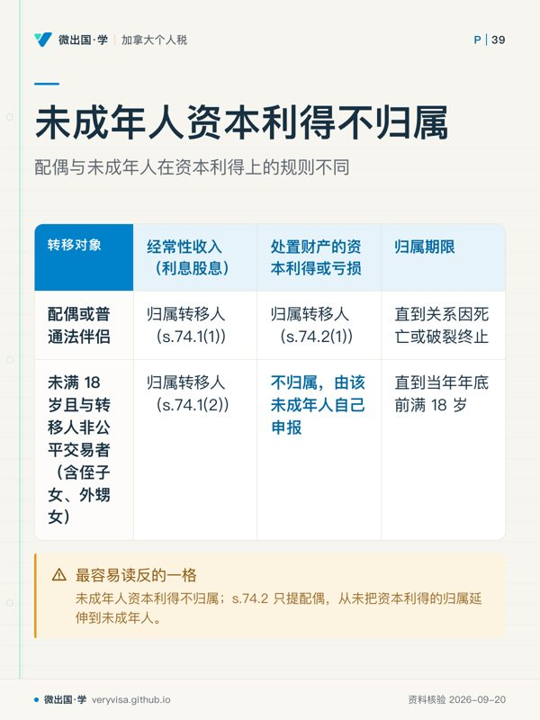
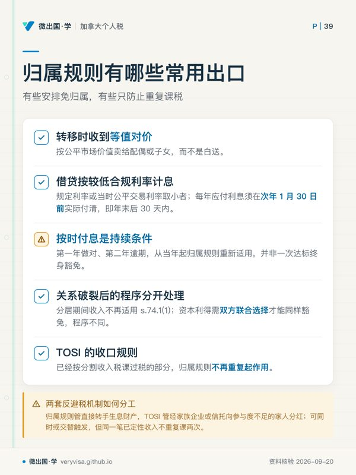

核实日期：2026-09-05｜本页口径：2026 税年（2027 年 2–4 月申报）。数字来源见 frontmatter
ws；ws里带cainv01的是本轮新查、尚在并入台账途中的临时编号。
同样是「投资账户里多出来的一笔钱」，加拿大税法给了三套完全不同的对待：一笔银行利息要全额并入收入，一笔加拿大公司股息要先放大再打折抵免，一笔股票处置的资本利得却只算一半。三者混着报，是这门课里最常见也最贵的错报之一——算错税率是小事，把该归到配偶或孩子名下的收入错记成自己名下（或反过来），会被 CRA 重新分配收入并追加利息。这页讲清楚这三条逻辑各自从哪来、什么时候会被「归属规则」拉回原主、以及一笔钱该扣的成本（carrying charges）能不能扣。读完你应该能做到：看到一笔投资收入先判定它属于哪一类、算出它的应税口径；判断一笔转给配偶或未成年子女的财产，其收益该由谁申报；分清哪些投资顾问费能进 line 22100、哪些不能。
ℹ️
这页不讲的三件事
资本利得的纳入率、LCGE、表面亏损等计算细节在 ca-invest-02-capital-gains；股息毛额化与抵免率的逐张 slip 逐个框号填法、以及外国税收抵免的取小值算法在 ca-core-05-pension-investment-income；RRSP/TFSA/FHSA 各自的供款上限与提取规则在 ca-invest-03-rrsp-tfsa-fhsa。本页只回答「这笔钱在法律上算谁的、按哪套逻辑收税」。
一、制度设计与底层逻辑：三套逻辑各自解决什么问题
投资收入不是一个税种，是三个税种挤在同一张报税表里。国会对利息、股息、资本利得分别设计了不同的课税口径，背后是三个不同的政策判断：
利息按全额课税，逻辑最简单：利息是纯粹的资金时间价值，出借人没有承担企业经营那种「亏本」的风险（哪怕借款人违约，那是信用风险不是投资风险），法律因此不给它任何优惠，赚多少利息就把多少利息全部计入应税收入，边际税率是多少就按多少缴。这也是为什么把大额固定收益资产（GIC、债券、定存）放进非注册账户往往最不划算——它是三类收入里唯一一分钱优惠都没有的。
股息用「毛额化＋税收抵免」两步走，解决的是双重课税问题：一家加拿大公司先按公司税税率交了一遍税，才能把税后利润当股息分给股东；如果股东个人层面再按全额课一次税，同一笔利润等于被两级政府各课一次。国会的解法叫「整合」（integration）——把股东实收的股息先放大，模拟出公司分红前那笔税前利润的大小，再用股息税收抵免把公司层面已经缴过的那部分税还给股东，让两级合计的税负近似等于股东自己直接挣这笔钱应缴的税。这套机制只对加拿大应税公司分配的股息生效：外国公司的股息从来没有在加拿大公司税网里被课过一次税，也就没有「整合」的对象，所以外国股息没有毛额化、没有股息税收抵免，只能全额并入利息那一类一起报（第二节详解）。
资本利得只算一半，理由与前两者都不同：处置资本财产的利得，本质上是承担了价格下跌风险之后换来的回报，纳入率打折是国会用来鼓励风险资本、缓解「名义利得里混有通胀虚增」这两个问题的政策工具，不是双重课税的补偿——这条纳入率历史上变动过（详见 ca-invest-02-capital-gains 与：2024 年一度提案改成 2/3，但从未真正生效，现行仍是二分之一）。
这三套逻辑之上，还叠着一条防线：归属规则（attribution rules）。 如果允许纳税人把生息资产随意转给税率更低的配偶或未成年子女、由对方按低税率申报这笔收入，累进税制的整个根基就会被架空——高收入的一方只要把资产「过户」给低收入的家人，家庭总税负就能大幅下降，而这与「谁真正承担了投资风险、谁实际掌控这笔资产」毫无关系。ITA 第 74.1 至 74.5 条因此规定：符合条件的转移或借贷，其收入或亏损（不是所有权）在计税时仍视为转移人自己的，直到关系终止或子女成年为止；错报的法律后果是 CRA 按归属规则重新分配收入到转移人名下，并对因此产生的少缴税款追加利息。这条防线与前面三套课税逻辑是两个不同层面的问题：前者回答「这笔钱按什么税率交税」，归属规则回答「这笔钱在报税表上应该写在谁的名字下面」。
二、2026 税年现行规则与数字
2.1 三种投资收入的课税定性一览

| 收入类型 | 应税口径 | 是否有专属抵免 | 典型来源 slip |
|---|---|---|---|
| 利息（含外国利息、外国股息） | 100% 全额计入 | 无 | T5、T3、T5013；外国来源常无加拿大 slip |
| 加拿大公司股息（合资格/非合资格） | 毛额化后计入（138%／115%） | 股息税收抵免（DTC） | T5、T3、T4PS、T5013 |
| 资本利得 | 50% 计入应税收入 | 无专属抵免，但有 LCGE 等豁免 | T5008、T3、T4PS |
这张表本身就是本页的核心判断依据：拿到一笔陌生的投资收入，先按这张表定性，再决定走哪条计算路径——外国来源的股息，定性上直接归进「利息」这一行，不进「加拿大公司股息」那一行，这是最容易被搞混的一处。
2.2 股息毛额化与抵免率：一张「三年三个值都一样」的三列表
| 项目 | 2024 税年（考试口径） | 2025 税年 | 2026 税年（现行） | 状态 |
|---|---|---|---|---|
| 合资格股息毛额化率 | 38% | 38% | 38% | 已生效；ITA s.82/s.121，2024–2026规则不变 |
| 非合资格股息毛额化率 | 15% | 15% | 15% | 已生效；ITA s.82/s.121，2024–2026规则不变 |
| 合资格股息联邦抵免率（按应税金额计） | 15.0198% | 15.0198% | 15.0198% | 已生效；ITA s.82/s.121，2024–2026规则不变 |
| 非合资格股息联邦抵免率（按应税金额计） | 9.0301% | 9.0301% | 9.0301% | 已生效；ITA s.82/s.121，2024–2026规则不变 |
「三年一个值」本身就是一个要落盘的结论：这两组比例分别写在 ITA s.82(1)(b)（毛额化率）与 s.121（抵免率，法条原文是 6/11 与 9/13 两个分数，换算成占应税金额的百分比就是上表的 15.0198%（2026 税年；已生效；官方公布值） 与 9.0301%（2026 税年；已生效；官方公布值）），不像 TFSA、RRSP 那样每年指数化，只有改法才会变——上一次改法分别是 2012 年（合资格档定型）与 2019 年（非合资格档定型），此后两条都没再动过。逐张 slip、逐个框号的填法与 line 40425 的取数路径，见 ca-core-05-pension-investment-income 第 2.4 与 2.5 节，本页不重复。
2.3 外国投资收入：没有整合，只有外国税收抵免
外国来源的利息与股息都不享有加拿大这套「毛额化＋DTC」的整合待遇，原因在第一节已经说清楚——DTC 抵消的是加拿大公司税，外国公司交的是外国税，两者不是同一件事。实务处理分两步：① 全额（未毛额化）并入 line 12100，与国内利息合并计算；② 如果这笔收入已经在来源国被扣过税，回到加拿大侧按「外国实缴税」与「这笔收入按加拿大税率本该缴多少」两者取小，作为外国税收抵免（line 40500）抵掉一部分——这条规则、取数表格 T2209 与不可叠加已条约免税收入的限制，ca-core-05 第 2.5 节已有完整算例，本页不再重算。这里要单独强调的是定性错误：把外国股息当成加拿大股息去做毛额化、申报股息税收抵免，是把整合待遇用在了没有加拿大公司税可抵的收入上，评税时会被剔除毛额化部分与虚报的抵免额。
2.4 归属规则：谁转给谁、转哪种财产、归属到几时
| 转移对象 | 利息／股息等经常性收入 | 处置该财产的资本利得／亏损 | 归属期限 |
|---|---|---|---|
| 配偶或普通法伴侣 | 归属转移人（s.74.1(1)） | 归属转移人（s.74.2(1)） | 直到关系因死亡或破裂终止 |
| 未满 18 岁、且与转移人非公平交易关系的人（含侄子女/外甥女） | 归属转移人（s.74.1(2)） | 不归属，由该未成年人自己申报 | 直到当年年底前满 18 岁 |
这张表里最容易读反的一格，是未成年人那一行的第二列： s.74.2 全文只提「spouse or common-law partner」，从未把资本利得的归属延伸到未成年人（加拿大联邦法规库）。也就是说，把一笔股票转给未满 18 岁的孩子，孩子持有期间收到的利息、股息，报税时仍要写进转移人自己的收入；但如果孩子日后卖掉这只股票，那笔资本利得从一开始就是孩子自己的收入，不会被拉回父母名下——这条不对称设计，是很多家庭把「预期会大幅升值、暂时不产生利息股息」的资产（比如成长股）优先转给未成年子女的直接动因。
归属规则不是无条件生效，s.74.5 给出三条常用的出口（加拿大联邦法规库）：① 转移时收到等值对价（按公平市场价值卖给配偶/子女，而不是白送）；② 借贷按规定利率或当时的公平交易利率（取小者）计息，且每年应付利息必须在次年 1 月 30 日前实际付清（s.74.5(2)，即每个日历年结束后 30 天内）——这一条是持续性条件，第一年做对、第二年忘了在期限内付息，从当年起归属规则重新适用，不是「一次达标终身豁免」；③ 因婚姻/同居关系破裂而分居后，分居期间产生的收入不再适用 74.1(1)（但资本利得那一侧需要双方联合选择才能同样豁免，两者程序不同，见 s.74.5(3)）。另有一条容易被忽略的收口：已经按「分割收入税」（Tax on Split Income, TOSI，常俗称 kiddie tax）课过税的部分，归属规则不再重复起作用（s.74.5(13)）——TOSI 与归属规则是两套独立的反避税机制，覆盖的手法不同：归属规则管的是「直接把生息财产转手给家人」，TOSI 管的是「通过家族企业/信托把分红分给参与度不够的家人」，两者可能同时或交替触发，但不会对同一笔已经定性的收入重复课两次反避税税。
2.5 Line 22100 Carrying Charges：可扣与不可扣的分界线
| 可扣 | 不可扣 |
|---|---|
| 非注册账户的投资管理/顾问费 | RRSP、RRIF、SPP、TFSA、FHSA 名下的同类顾问费（CRA） |
| 用来赚取利息/股息等收入而借款产生的利息 | 只可能产生资本利得的投资，其借款利息不可扣（CRA 页单独强调这一条例外） |
| 保险单质押贷款用于赚取业务/投资收入的利息（需 Form T2210 保险公司核实） | 借款用来供款进 RRSP、RPP、RCA、RESP、RDSP、SPP、TFSA、FHSA 等任一注册计划——不论供款目的是什么 |
| 记录投资收入或纳税申报（有营业/财产收入者）的合理费用 | 保险箱费、学生贷款利息、财经报刊订阅费、买卖证券的经纪佣金/手续费（这些要并入 ACB 或处置成本，改在计算资本利得/亏损时扣） |
这张表背后的判断逻辑是两条线交叉：账户是否已经享受注册计划的税收递延/免税待遇（享受了，管理费就不能重复省税）与这笔支出到底是「赚取收入的成本」还是「取得资产本身的成本」（后者进 ACB，不进 line 22100）。这条分界线常年不变，属于长青机制，不随年度指数化。
三、实务流程：拿到一笔投资收入，怎么判定、怎么填
- 先看是不是转移／借贷给了配偶或未成年家人——如果是，先套第 2.4 节的表判断归属规则是否适用、是否落进 s.74.5 的例外，再决定这笔收入最终写进谁的报税表。这一步在填表之前，因为归属一旦成立，整套后续填表（哪张 slip 报到谁名下）都要按转移人而不是名义持有人来走。
- 再看这笔钱的来源国。 加拿大应税公司分配的股息才走「毛额化＋DTC」这条路（line 12000/12010 与 line 40425，详见
ca-core-05）；境外来源的利息与股息一律并入 line 12100，若已被外国扣税，另走 line 40500 的外国税收抵免。 - 折价债券与剥离债券（strip bond）按年度应计申报，不等到赎回。 息票债券每半年收到的利息由发行方发 T5；但折价债（发行价低于面值，差额视为利息）与剥离债券没有 T5，持有人要自己按有效利率法逐年计算「应计但未收到」的利息计入当年 line 12100，并同步把这部分金额加进债券的 ACB——这样等到赎回或出售时，已经报过税的部分不会在计算资本利得时被重复课税。中途转手的一方，卖方要把「上次付息日至转手日」这段应计利息一并报进当年收入，买方则可以在 line 22100 把这笔已经计入卖方收入的应计利息作为「Interest Paid by You」申报扣除，同时相应调低自己的 ACB。
- T3 信托分配单要按框号拆开报，不能整单当一类收入处理。 常见的几个框各自流向不同的行：box 21 是分配给受益人的资本利得，走 Schedule 3、按 50% 纳入 line 12700；box 25 是利息类的其他投资收入，直接并入 line 12100；box 26 是无法保留原有性质、按「其他收入」分配的部分，走 line 13000（不是 12100，也不是 12700）；box 33/34 是信托已代为缴纳的外国税，用于计算受益人自己那份外国税收抵免。合资格与非合资格股息另有专属框号（详见
ca-core-05第三节表格），不与上述四个框混用。 - 最后核对 line 22100 的可扣范围（第 2.5 节表格），把非投资顾问费性质的支出（经纪佣金、保险箱费）从这一行剔除，改并入相应的 ACB 或处置成本计算。
四、联邦之外：BC 省与跨境的两个提示
归属规则、TOSI、line 22100 的可扣范围，都是联邦法律层面的定性，不因居住省份而异——一旦归属规则把收入分回转移人名下，这笔收入连同其省级税负一起转移，BC 省表不会另设一套省级归属规则来推翻联邦定性。BC 侧真正独立的部分只有股息税收抵免的省级抵免率（与联邦的 15.0198%（2026 税年；已生效；官方公布值）/9.0301%（2026 税年；已生效；官方公布值） 各自独立计算，ca-core-05 第四节已有数字），以及归属规则计算出的省税，最终仍是按转移人当年整体收入过一遍 BC 428 的省税阶梯。
对持美国身份或需要同时对美申报的加拿大居民，最值得记住的一点是：加拿大的归属规则与 TOSI，在美国税法里没有逐条对应的机制——美国有自己的「未成年子女未实现收入」规则（俗称 kiddie tax，机制与门槛都不同，属另一套跨境板块的内容），不能拿加拿大这套 s.74.1–74.5 的分析直接套用到美方申报上；同一笔转移给未成年子女的投资收入，在加拿大侧按本页规则判断归属，在美方 1040 上则要单独按美方规则重新判断一遍，两边的结论未必一致。完整的跨境对照留给 xb 板块的专页处理，本页只提醒这一点不能想当然地平移。
五、历史变革：归属规则为什么会有，TOSI 为什么后来又加了一层
归属规则针对的是最直接的避税手法——把生息财产的所有权转给低税率的家人，让对方按低税率申报这笔收入。这个手法在累进税制下永远有利可图，只要边际税率存在梯度，这条防线就有存在的必要；现行的 s.74.1 条文本身在 1994、2000、2007、2011 年经历过几次技术性修订，最近一次实质修订是 2011 年（加拿大联邦法规库），但「转移生息财产给配偶或未成年子女、收入仍归转移人」这条基本框架长期未变。
归属规则管不住的是另一种更迂回的分红手法：通过家族企业或信托把利润分给参与度不够的家人。 一个家庭如果直接持有一家小企业的股份，父母可以把部分股份挂在配偶或成年子女名下，由公司分红给这些家人，而这些家人可能完全不参与经营——这种安排不涉及「转移生息财产」，s.74.1 这条以「财产转移」为前提的规则根本管不到它。国会因此在2000 年引入了「分割收入税」（Tax on Split Income, TOSI），最初只针对未满 18 岁的未成年人，俗称「kiddie tax」——对这些孩子从家族相关企业收到的股息、按最高联邦与省边际税率整体课税，抵免范围也被限缩到只剩股息税收抵免、外国税收抵免与残障税收抵免。这套制度直到 2018 年才被扩大到 18 岁以上的家庭成员（含配偶），此后才有了「排除股份」「排除营业」等一系列豁免测试来区分哪些家庭成员的分红是真实参与经营换来的、哪些是纯粹分割收入。这也是为什么第 2.4 节要特别强调「归属规则与 TOSI 是两套机制」——它们诞生的时间差了几十年，各自堵的是完全不同的漏洞，一套堵直接转移财产，另一套堵通过企业结构间接分红。
六、案例
案例一：温哥华的双职工家庭（示范：资产该放注册账户还是非注册账户） 林先生与林太太名下除了 RRSP、TFSA 额度都用满外，还有一笔 $80,000 的家庭储蓄需要投资（示例数字）。他们面前有两个选择：把这笔钱换成收益率较高的定存/债券基金放进非注册账户，或者优先把这笔钱换成派息蓝筹股放非注册账户、把定存类资产挪进已经腾出空间的 TFSA。按第一节的逻辑，利息是三种收入里唯一没有任何优惠的一种，边际税率是多少就全额按多少交——把它放进免税增长的 TFSA，等于把「原本要全额课税的收入」直接变成免税收入；而派息股票即使放在非注册账户，也还有毛额化后的 DTC 部分抵消，在同等收入和适用抵免等条件下，税负可能低于利息。常见错报不是填表错误，而是资产配置的顺序错了：配置仍须同时考虑预期收益、风险、外国预扣税和未来提取；单凭收入类别不能裁定所有家庭的优先次序。
案例二：素里的祖父母与孙辈（示范：借贷给未成年人避免归属，以及资本利得不归属的边界） 王先生借给未满 18 岁的孙女 $50,000 用于购买一只成长股基金（示例数字），双方签订借据，按当时的规定利率计息，并且此后每年都在次年 1 月 30 日前付清当年应付利息。因为满足了 s.74.5(2) 的三个条件，这笔投资此后产生的利息、股息不会归属回王先生名下，而是孙女自己名下的收入（通常远低于王先生的边际税率）。三年后孙女卖出这只基金，实现了一笔可观的资本利得——即使这笔投资完全没有触发归属规则，这个结果本身也不意外：即便没有满足借贷例外，s.74.2 从一开始就没有把资本利得的归属延伸到未成年人身上，这笔利得始终是孙女自己的收入。常见错报：家庭成员事后忘记逐年按时付息（比如某一年拖到 2 月才付），从那一年起归属规则重新适用，之前几年的免税安排不受影响，但当年及此后的利息、股息要重新归属回王先生名下，很多家庭直到评税通知寄来才发现这一条持续性要求被打破了。
案例三：列治文的退休投资者（示范：T3 信托分配与 line 22100 的可扣范围） 陈女士退休后主要靠一个非注册投资账户生活，当年收到一张 T3 信托分配单，box 21 显示资本利得 $3,780、box 25 显示利息 $1,200、box 26 显示其他收入 $450（示例数字）；她同时为这个非注册账户支付了 $600 的投资顾问费，另有一笔 RRSP 账户的顾问费 $300 由同一家机构收取。按第三节的流程：box 21 的 $3,780 走 Schedule 3、按 50% 纳入 line 12700；box 25 的 $1,200 并入 line 12100；box 26 的 $450 单独走 line 13000；非注册账户的 $600 顾问费可以在 line 22100 申报扣除，但 RRSP 账户的 $300 顾问费不能扣，因为 RRSP 本身已经享有税收递延待遇。常见错报：把 box 26 的「其他收入」和 box 25 的利息混在一起都塞进 line 12100，或者把两个账户的顾问费加在一起整笔申报到 line 22100，把不可扣的那部分也一并扣掉。
七、常见错报与自查清单
- 把外国股息当加拿大股息做毛额化、申报股息税收抵免——外国股息从未在加拿大公司税网里被课过税，没有整合的对象，只能全额并入 line 12100，不能享受 DTC。
- 转给配偶的生息资产，以为过户之后收入就跟自己无关——只要关系存续、且不满足 s.74.5 的例外，利息、股息在计税时仍要写进转移人自己的申报表。
- 转给未成年子女的资产，处置时把资本利得也当成「归属回自己」处理——s.74.2 从未把资本利得的归属延伸到未成年人，这部分利得从一开始就是孩子自己的收入。
- 忘记「每年 1 月 30 日前付清上一年利息」是持续性条件——按规定利率借贷的第一年做对了，之后某一年利息拖过次年 1 月 30 日，从那一年起归属规则重新适用，不是「一次达标、终身有效」。
- 把 RRSP、TFSA 名下的投资顾问费拿去 line 22100 申报——这类账户已经享有税收递延或免税待遇，管理费不能重复省税；只有非注册账户的顾问费能扣。
- 把买卖证券的经纪佣金/手续费也塞进 line 22100——这类成本应当并入证券的 ACB 或处置成本，在计算资本利得/亏损时体现，不是当年的费用扣除。
- 折价债券或剥离债券持有期间不申报应计利息，等到赎回才一次性报——这两类债券要求逐年按有效利率法申报「应计但未收到」的利息，不按现金收付制处理。
- 把 T3 信托分配单的 box 26「其他收入」和 box 25「利息」混填进同一行——两者分别走 line 13000 与 line 12100，是两个不同的行，混填会让 CRA 系统比对不上原始信息单。
术语双语表
| English | 中文 | 一句机制 |
|---|---|---|
| Interest income | 利息收入 | 全额按边际税率计入应税收入，无任何优惠 |
| Gross-up | 毛额化 | 把实收股息放大，模拟公司分红前的税前利润 |
| Dividend Tax Credit (DTC) | 股息税收抵免 | 抵消公司层面已缴的税，实现「整合」 |
| Integration | 整合 | 公司与个人两级课税合计近似等于个人直接课税的设计理念 |
| Foreign Tax Credit (FTC) | 外国税收抵免 | 外国实缴税与加拿大本该缴税两者取小 |
| Attribution rules | 归属规则 | 把转移给配偶/未成年人的财产之收入拉回转移人名下计税 |
| Non-arm's length | 非公平交易关系 | 归属规则适用未成年人条款的判断标准之一 |
| Prescribed rate loan | 规定利率贷款 | 按规定利率计息且每年 1 月 30 日前付清上一年利息，可豁免归属 |
| Tax on Split Income (TOSI) | 分割收入税 | 俗称 kiddie tax，堵的是家族企业/信托分红给参与度不够的家人 |
| Excluded shares / excluded business | 排除股份／排除营业 | TOSI 的豁免测试，判断分红是否来自真实经营参与 |
| Carrying charges | 承担费用 | 为赚取投资收入而付出且可在 line 22100 扣除的成本 |
| Investment counsel fee | 投资顾问费 | 非注册账户可扣，注册计划名下不可扣 |
| Adjusted cost base (ACB) | 调整后成本基数 | 经纪佣金等取得成本并入这里而非当年费用 |
| Discount bond | 折价债券 | 发行价低于面值，差额视为利息按年应计 |
| Strip bond | 剥离债券 | 无票息债券，持有人自行按年计算应计利息，无 T5 |
| Line 12100 | 第 12100 行 | 利息与其他投资收入，含外国利息股息 |
| Line 12000 / 12010 | 第 12000／12010 行 | 应税股息合计／非合资格部分单独复核 |
| Line 22100 | 第 22100 行 | 承担费用、利息费用及其他费用 |
| Line 40500 | 第 40500 行 | 联邦外国税收抵免 |
| T3 slip | T3 信托收入分配单 | box 21 资本利得／box 25 利息／box 26 其他收入／box 33-34 外国税 |
50
本页知识卡
不看正文也能拿到这一节的核心内容：先看导读，再看图。点图放大，左右翻页。
- 先看横向看每一行，计入方式、优惠和凭证来源要配套判断。
- 易漏名字里有“股息”不代表能用本国公司的那套优惠，先辨付款方所在国。
- 下一步去练习拿陌生凭证先分类，再把跨境凭证问题带给持牌专业人士。

- 先看顺着流程先判断待遇，再落到申报位置，最后才处理境外扣税。
- 易漏最容易错在把境外公司的付款套进本国公司分红机制。
- 下一步去练习按一张境外投资凭证走流程，遇到条约冲突再问持牌专业人士。

- 先看先按受让人分行，再横看持有期间收益与卖出结果是否回到转移人名下。
- 易漏这种差异会让预期大幅升值、暂不生息的资产更常被转给未成年子女。
- 下一步去练习把家庭转移案例按受让人和收入类型拆开，再带具体安排问持牌专业人士。

- 先看先按交易定价、融资纪律、关系变化与重复计税几类问题来读。
- 易漏借款安排不是设好一次就结束，后续年度若逾期，保护会失效。
- 下一步去练习逐项核对家庭转移安排，再把协议和付款记录交持牌专业人士。